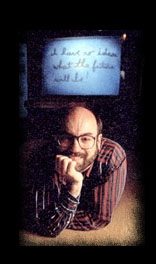
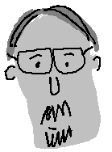
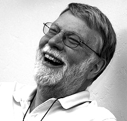

The terms “calm computing” and “calm technology” were coined in 1995 by PARC Researchers Mark Weiser and John Seely Brown in reaction to the increasing complexities that information technologies were creating. He felt that the promise of computing systems was that they might “simplify complexities, not introduce new ones.”1
Weiser believed that this would lead to an era of “calm technology,” in which technology, rather than panicking us, would help us focus on the things that were really important to us.2
The work of Mark Weiser, Rich Gold and John Seeley Brown was the primary inspiration for this site. Their work can help us understand what we need to implement to handle the increasing complexity of the world.
These three individuals were at the beginning of exploring how our everyday lives would work in the future. Together and with others at Xerox PARC they explored the future of the interface, society and created a miniature implementation of the future. It is my mission to carry on the design philosophy of these individuals for the next generation. Not only were they ahead of their time, but they wrote about the era of ubiquitous computing we now find ourselves in.
-@caseorganic, 2014
Mark Weiser
Mark Weiser was the chief technology officer at Xerox’s Palo Alto Research Center (Parc). He is often referred to as the father of ubiquitous computing. He coined the term in 1988 to describe a future in which invisible computers, embedded in everyday objects, replace PCs. Other research interests included garbage collection, operating systems, and user interface design.
Weiser wrote or co-wrote over 75 technical publications on such subjects as the psychology of programming, program slicing, operating systems, programming environments, garbage collection, and technological ethics. He was a member of the ACM, IEEE Computer Society, and American Association for the Advancement of Science. Weiser passed away in 1999.
Rich Gold
Rich Gold was a composer, cartoonist, artist and researcher who holds ten patents. At Sega he invented “Little Computer People” (Activision), the first fully autonomous commercially-available computerized person. At Mattel Toys he was the manager of the PowerGlove.
Gold joined Xerox PARC in the early nineties, where he was a researcher in Ubiquitous Computing. In 1994, he created and ran the PARC artist-in-residence program (PAIR), which paired fine artists and scientists together based on shared technologies. He was also the manager of RED (Research in Experimental Documents) at Xerox PARC, which looks at the creation of new document genres by merging art, design, science and engineering.
Gold was a provocative speaker who lectured throughout the world on the future of the book, the nature of engineering, creativity, innovation and Evocative Knowledge Objects (EKOs). Rich passed away in his sleep on January 9, 2003.
You can still see Rich Gold's webpage from 2002 on The Internet Archive.
John Seeley Brown
For nearly two decades, John Seely Brown served as Chief Scientist of Xerox Corporation and the director of its Palo Alto Research Center (PARC).
Brown expanded PARC's research to include new topics like radical innovation, organizational learning, complex adaptive systems, and nano technologies. His personal research interests include digital youth culture, digital media and institutional innovation.
Brown has published over 100 papers in scientific journals. He co-authored the acclaimed book The Social Life of Information (HBS Press, 2000) with Paul Duguid.
JSB takes a broad view of the human contexts in which technologies operate and a healthy skepticism on technology's impact on society.